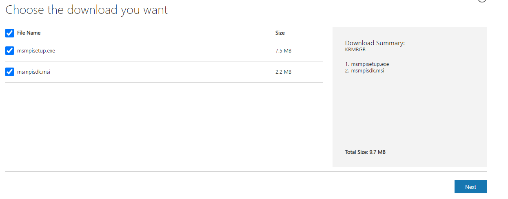
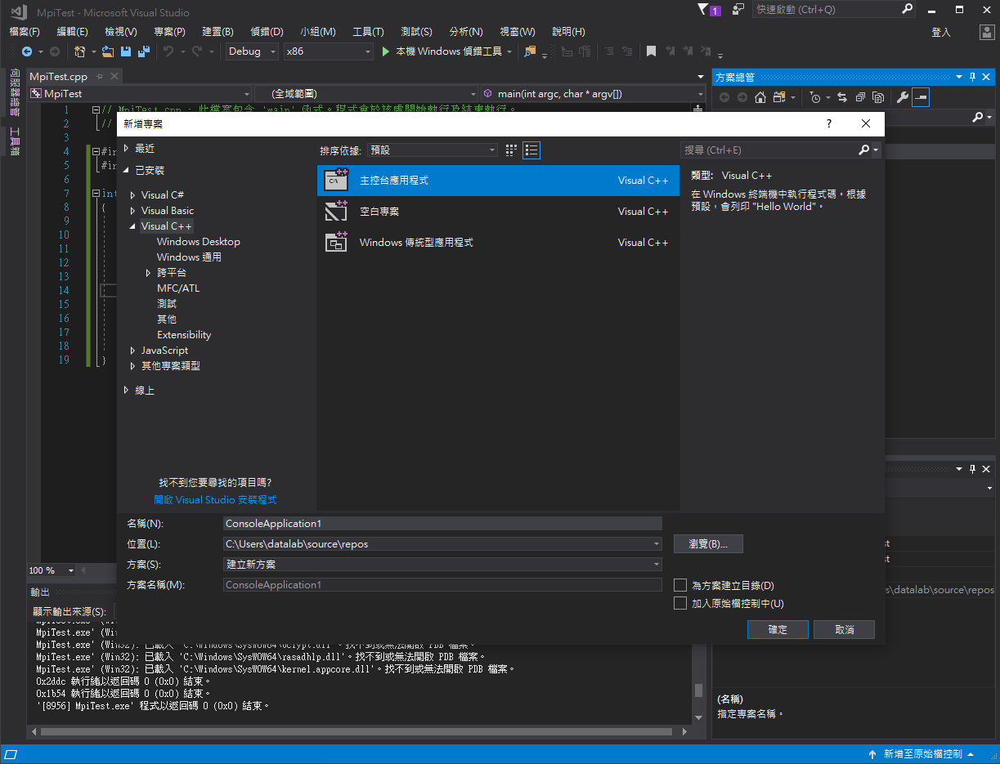
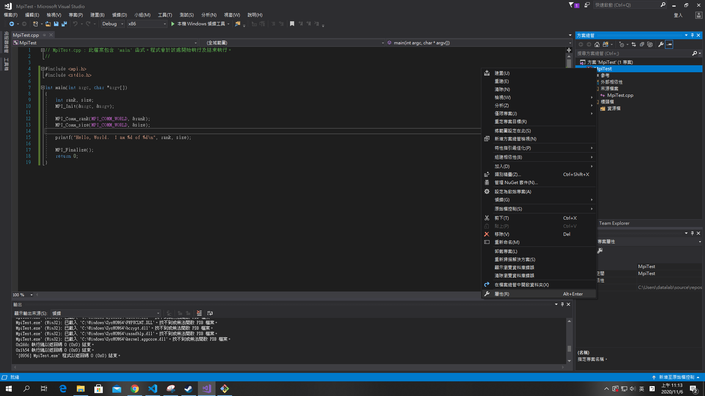
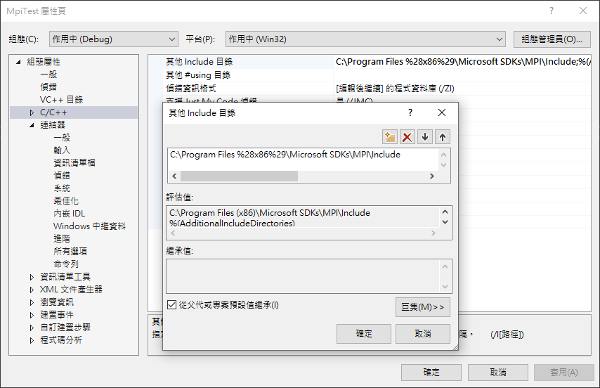
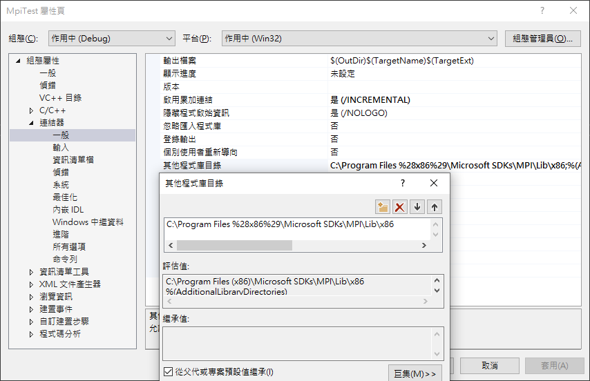
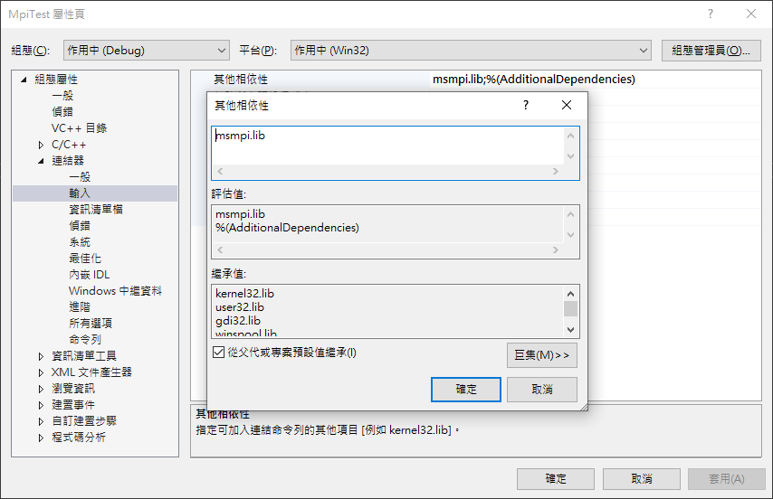
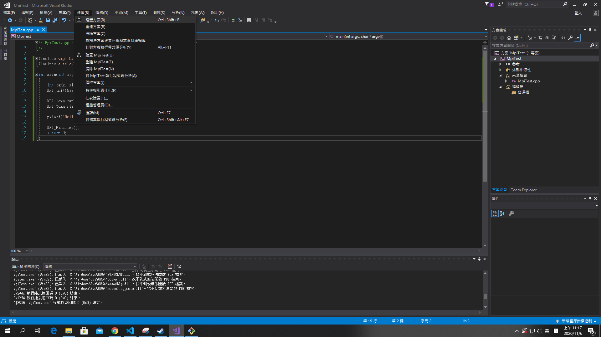
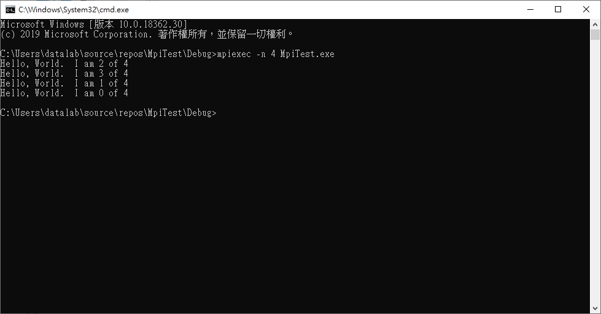

Parallel Programming 平行程式
平行計算是一種類型的計算，許多計算或執行過程是同時進行的。把大問題分為小問題，然後同時解決。以下式建置平行程式環境的流程。
MS-MPI 安裝教學
首先打開MS-MPI然後到下載的地方點擊MS-MPI vxx.x.x，如下圖紫色字體。

接著將所有檔案打勾然後按下一步就會把檔案下載下來了。

下載下來後執行並下移步到底，若要更換路徑請自行記得路徑。
接著打開Visual Studio 開啟一個C++專案。

點擊右邊專案右鍵，屬性。

打開後按C/C++->其他include目錄，將剛剛按裝好的MPI/Include路徑設好。


建置完後就會產出一個.exe的檔案。

1 |
|

將終端機打開source\repos\MpiTest\Debug執行面下指令(這個路徑是你的專案路徑，因此可能會有所不同)，你就會看到下圖結果。
1 | $ mpiexec -n 4 MpiTest.exe |
若無此指令請確認環境變數是否有設定完成。
